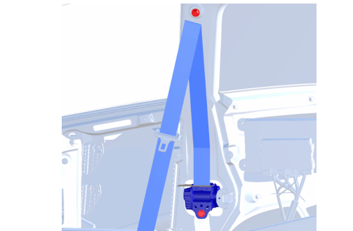
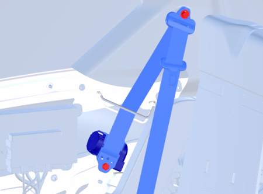
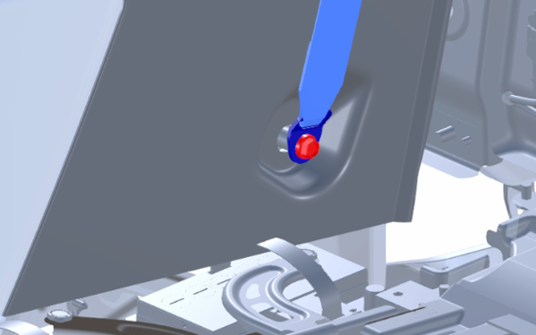
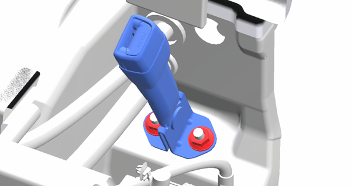

4-2-2 シートベルト
構成図
|
1 |
BELT ASSY, RR SEAT LAP INNER (G3230-A1000) |
2 |
BELT ASSY, FR SEAT LAP OUTER, RH (G3110-B1000) |
|
3 |
BELT ASSY, RR SEAT LAP OUTER, RH (G3210-B1000) |
4 |
NUT, FLANGE (Z5121-80000) |
取り外し前作業
-
SEAT ASSY, FR (G1110-A1000) を取り外す。4-2_1 シート
-
BOARD SUB-ASSY, SIDE TRIM, LWR RHを取り外す。4-2-3 インストルメントパネル
取り外し手順
構成図を参考にして取り外す。
取り付け手順
取り外しと逆の手順で取り付ける。

1.BELT ASSY, FR SEAT LAP OUTER, RH取り付け
-
ボルト２本を締め付ける。

-
BBOX SUB-ASSY, SIDE CONSOLE, RHを取り付ける。
-
ボルトを締め付ける。

2.BELT ASSY, RR SEAT LAP OUTER, RH取り付け
-
ボルト２本を締め付ける。

-
TRIM SUB-ASSY, QUARTER, RHを取り付ける。
-
ボルトを締め付ける。

3.BELT ASSY, RR SEAT LAP INNER取り付け
-
ナット２個でBELT ASSY, RR SEAT LAP INNERを取り付ける。
-
コネクターを接続する。